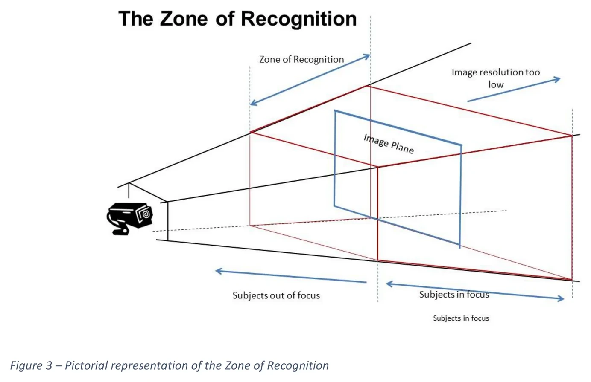
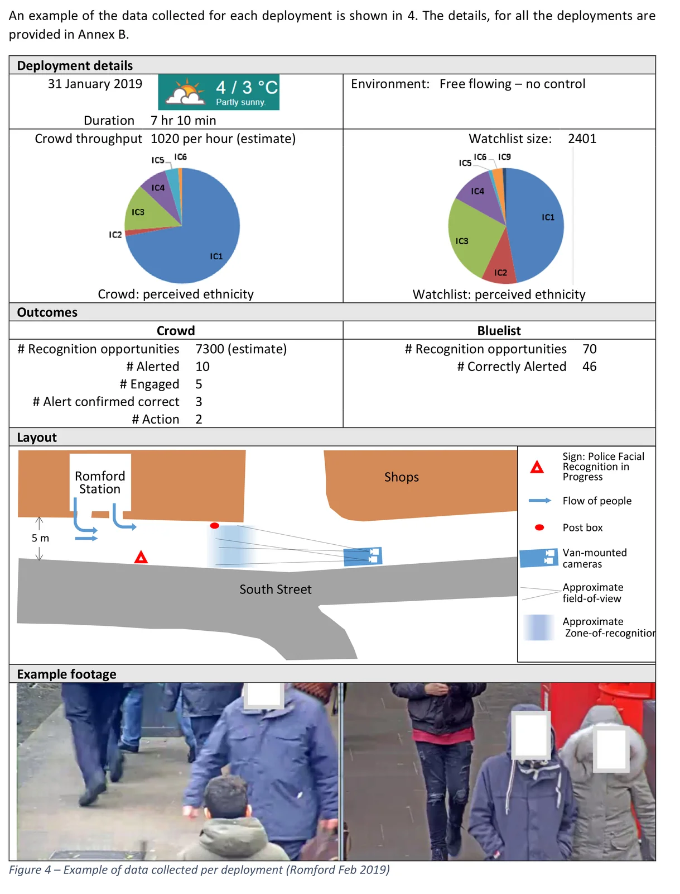
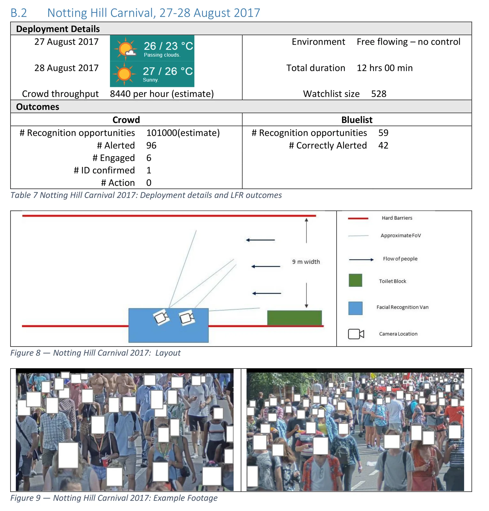

Slideshow
1 / 5
Home
Fig. 2: The Zone of Recognition
Metropolitan Police Service Live Facial Recognition Trials (NPL report, Feb 2020), p. 10February 2020Illustration

Fig. 3: Example of data collected per deployment (Romford)
Metropolitan Police Service Live Facial Recognition Trials (NPL report, Feb 2020), p. 13February 2020Illustration

Fig. 4: Notting Hill Carnival, 28-29 August 2016: deployment sheet
Metropolitan Police Service Live Facial Recognition Trials (NPL report, Feb 2020), p. 30February 2020Illustration

Fig. 5: Notting Hill Carnival, 27-28 August 2017: deployment sheet
Metropolitan Police Service Live Facial Recognition Trials (NPL report, Feb 2020), p. 31February 2020Illustration
